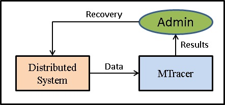
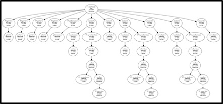
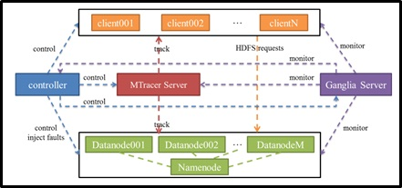

Jingwen Zhou (周竞文)
Ph.D. Student
Science and Technology on Parallel and Distributed Processing Laboratory (PDL),
College of Computer,
National University of Defense Technology (NUDT),
Changsha, Hunan 410073, R. P. China.
• About me
|
About me
In 2009, I received the Bachelor Degree from NUDT and was recommended for admission to be a master candidate of this school.
In 2011, I was again recommended for admission to be a doctoral candidate of NUDT.
Now, I am a Ph.D. student of the College of Computer in NUDT, and works in the PDL in NUDT.
My research interests include cloud computing, distributed computing, system monitoring and fault analysis, etc.
Research Projects
 MTracer
MTracer is a lightweight white-box-based tracing system for medium-scale distributed systems, which records the causal paths of system running in the form of trace tree. MTracer adopts the client-server framework, where a special recording mechanism and several optimizations are designed to reduce the overload and improve the efficiency. The information recorded by MTracer can help administrators to understand the system states and behaiviors, and also can be employed in failure detection, fault analysis, system recovery, etc.  MTracer-Viz (Try it!)
MTracer-Viz is a web-based front-end for visualizing the traces recorded by MTracer. Besides the ability of trace tree reconstruction and various flexible queries, some advanced functions are also implemented in MTracer-Viz, such as trace classification and performance anomalies diagnosis, which is helpful for understanding the system behaviors and localizing function or performance faults.
 TraceBench (Try it!)
TraceBench is a fine-grained user request-centric open trace data set, collected with MTracer. Traces are collected on an HDFS service deployed in a real IaaS environment. When collecting, we simulate different scenarios, considering multiple scales of clusters, different user requests, various speeds of workloads, many types of injected faults, etc. Since TraceBench is well designed and collected in a real environment, it would be helpful to the trace-oriented monitoring topics and other related research, such as system understanding and feature extraction.
Publications
2014
Jingwen Zhou, Zhenbang Chen, Haibo Mi, and Ji Wang. "MTracer: A Trace-Oriented Monitoring Framework for Medium-Scale Distributed Systems," in Proceedings of the IEEE 8th International Symposium on Service Oriented System Engineering (SOSE 2014), pp. 266-271, 2014.
[pdf, slides]
Jingwen Zhou, Zhenbang Chen, Ji Wang, Zibin Zheng, and Michael R. Lyu. "Towards An Open Data Set for Trace-Oriented Monitoring," In Proceedings of the 2014 IEEE International Conference on Cloud Computing (CLOUD 2014), pp. 922-923, 2014.
[pdf, slides, poster]
Jingwen Zhou, Zhenbang Chen, Ji Wang, Zibin Zheng, and Wei Dong "A Runtime Verification Based Trace-Oriented Monitoring Framework for Cloud Systems," In Supplemental Proceedings of the 25th IEEE International Symposium on Software Reliability Engineering (ISSRE 2014), to appear, 2014.
[pdf]
Jingwen Zhou, Zhenbang Chen, Ji Wang, Zibin Zheng, and Michael R. Lyu. "TraceBench: An Open Data Set for Trace-Oriented Monitoring," In Proceedings of the 6th IEEE International Conference on Cloud Computing Technology and Science (CloudCom 2014), to appear, 2014.
[pdf]